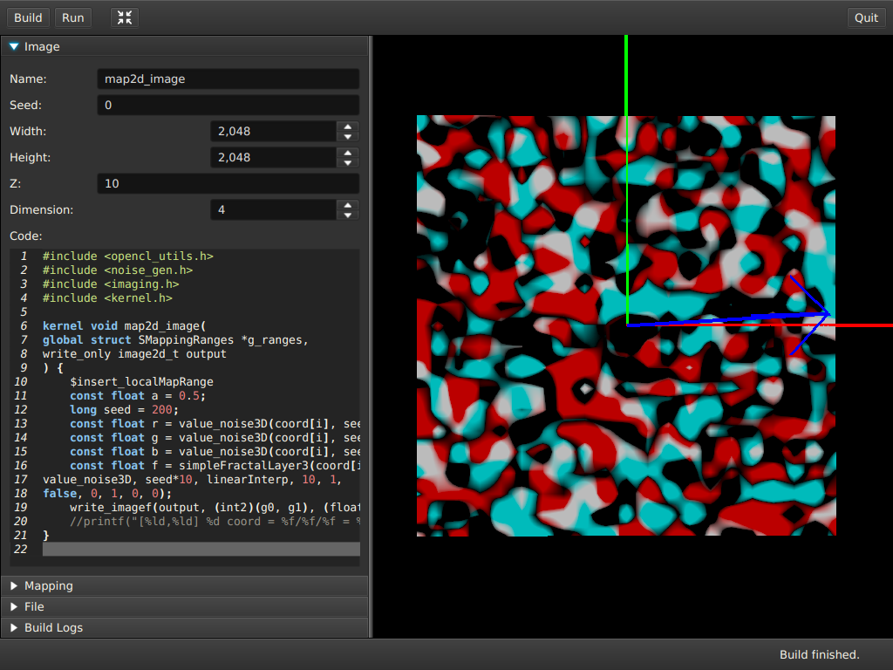

Figure 5: Toolbar Build Button

The purpose of this document is to describe the ANL-OpenCL library, how to use it to create noise images and how to use the bundled app.
The bundled app is a graphical user interface to enter the kernel code, build it and generate a preview of the noise image. It is implemented in Java and JMonkeyEngine 3. The goal of the app is to quickly prototype noise images with kernel code. The goal is not to provide an IDE or an advanced code editor. The app is divided into two parts. One part is to enter the kernel code and parameters and other other part is to display the generated images.
The toolbar have buttons for the most common functions.
The Build button will build the kernel code and display the generated image according to the parameters.
The Reset Camera button will reset the camera to the default position and zoom. Key shortcut F10.
The Quit button will exit the app. Key shortcut Ctrl-Q.
The image window have the image parameters and the kernel code.
The name of the kernel to build.
The seed number.
The width of the image in pixels.
The height of the image in pixels.
The Z value.
The count of float numbers of each coordinate. Different noise functions expect to have the correct dimension of the coordinates available.
The mapping window have the parameters to map coordinates.
If enabled then the mapping is done in 3D and the function map3D must be used.
The scene window shows the generated images. The scene can be moved and zoomed with the mouse.